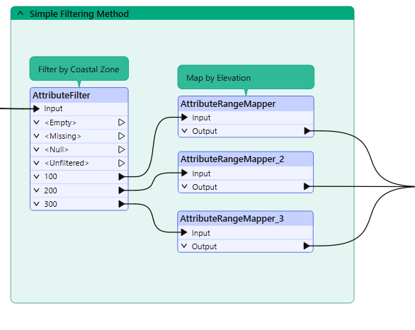
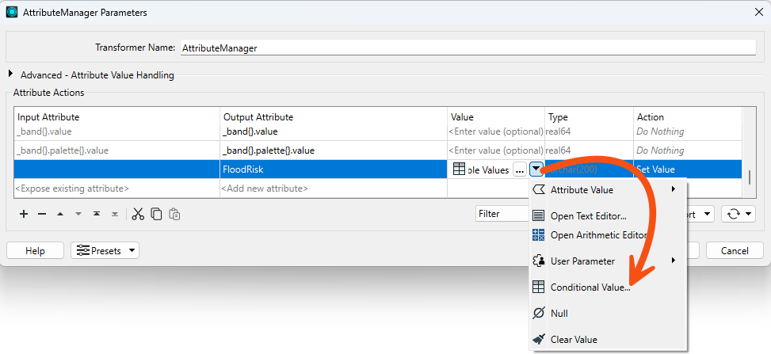
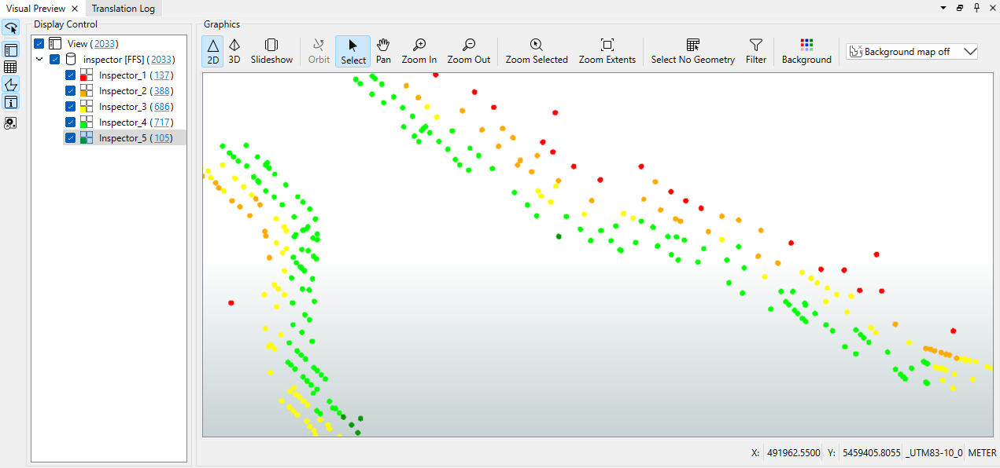

After completing this lesson, you’ll be able to:
Jennifer is working on a workspace to calculate the tsunami flood risk for all addresses in the city. The flood risk score combines closeness to the shoreline and elevation above sea level. It is on a scale from one to five (1-5) and is calculated using this table:
| Elevation (meters above sea level) | ||||
| 0-10m | 10-25m | 25-60m | ||
| Distance from Shoreline (meters) | 100m | 1 | 2 | 3 |
| 200m | 2 | 3 | 4 | |
| 300m | 3 | 4 | 5 | |
She has built the workspace so that each address has an elevation and distance from the shoreline. Now, she wants to use conditional values to calculate the flood risk score.
Jennifer opens the starting workspace (C:\FMEData\Workspaces\TransformAttributes\exercise-flood-risk-project.fmw).
She turns on feature caching and runs the workspace.
You will get an Unexpected Input dialog, but you can ignore it. FME shows this dialog when it reads features in the source dataset that do not have a feature type defined on the canvas.
To observe the data, she inspects all three CoastalZones [GML] reader feature type caches and the AttributeRenamer's Output cache (Ctrl or ⌘-click).

This colored screenshot shows how the addresses fall within (and are assigned) a zone denoting their distance from the shoreline. They also possess an elevation value. Jennifer must now use this information to assign a flood risk to each address.
As with most FME projects, there are multiple ways to carry out this task. The two primary techniques are conditional filtering and data mapping.
Conditional filtering means separating the data according to the elevation and shoreline zone. Data mapping means we set an attribute value (flood risk) according to the value of other attributes.
Here is an example of how we might mix filtering data by coastal zone with mapping data by elevation:

However, we can avoid filtering data by using Conditional Values. The filter conditions are incorporated as the conditions for our Conditional Values.
Jennifer added an AttributeManager in the starting workspace after the AttributeRenamer.
She inspects the AttributeManager parameters. Ignoring the existing attributes, she scrolls to the bottom of the dialog and finds the FloodRisk attribute.
She has already begun configuring a conditional value but needs to finish it. In the Attribute Value field, she clicks the drop-down arrow and chooses Conditional Value:

This opens a new dialog similar to a Tester/TestFilter transformer. It has fields for Test Condition and Output Value.
Jennifer has already configured the dialog to map the conditions for where FloodRisk=1 (the highest). According to the table of calculations, this can occur only where Zone = 100 AND Elevation <= 10. Jennifer has configured the Test to use the Boolean operator AND to ensure both conditions are true:

She needs to finish configuring the dialog with the case for FloodRisk = 5.
She double-clicks the cell in the Test column to the right of the gray Else If text to add a new Test. Clicking opens a Tester-like dialog:

She configures the dialog as follows. She remembers to specify the output Value (5) below the Test Clauses area:

She clicks OK to close this part of the dialog.
The main Conditional Definition dialog is complete. It should look like this:

It is essential to keep these in the correct order; otherwise, a feature may pass the tests in the wrong order and receive a lower risk than expected.
Jennifer accepts the changes, and the main AttributeManager dialog now looks like this:

Jennifer would like to separate the data into layers for easier inspection. She can accomplish this with an Inspector transformer with a Group By setting. She places a single Inspector transformer connected to the AttributeManager's Output port.
She opens the Inspector parameters dialog, checks Group Processing, and sets Group By to the newly created FloodRisk attribute.
She saves and runs the workspace. She sees each address colored to match its flood risk. She can adjust the feature symbology to produce a better result, like so:

She can also turn off each zone by clicking the checkboxes in Display Control to see which addresses are most/least at risk.
Best practices should always play a part in any workspace. Using conditional values usually means fewer transformers on the canvas, but does this improve the workspace? Is it a more aesthetic (good-looking) workspace? The decision on which method to use may depend on who will maintain the workspace. In most cases, conditional filters or data mapping are both valid options. If you "hide" a lot of logic in a Conditional Value calculation, call it out by attaching an annotation. Summary annotation is particularly useful, since it will automatically update if you change the logic.